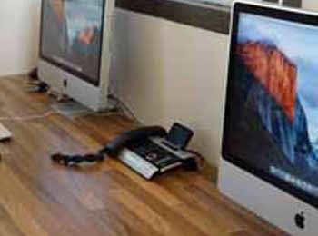

Contact
Info@mctwee.nl
013 - 544 02 42
Kruisstraat 50, 5014 HV, Tilburg


Als je dit leest, zit je misschien 'ziek thuis'. Je hebt klachten waardoor je niet kunt werken. Hoofdpijn, slapeloosheid, moeite met concentreren en angst zijn voorbeelden van dergelijke klachten. Zou het niet fijn zijn om ‘gewoon’ je leven weer op te kunnen pakken? Gewoon energie hebben voor leuke dingen. Gewoon werken en daar plezier in hebben.
Bij MC2 zijn we gespecialiseerd in Arbeid en Gezondheid! Dat houdt in dat we cliënten begeleiden met Arbeidgerelateerde klachten en Arbeidrelevante klachten. Dit doen wij middels een door ons ontwikkeld programma: MDP (Multi Disciplinair Programma). Een programma op maat gemaakt voor elk individu.
Ons secretariaat is maandag, dinsdag, donderdag en vrijdag te bereiken van 8:30 tot 17:00. U heeft daarnaast de mogelijkheid van mail en van het inspreken van een boodschap op ons antwoordapparaat.

Voor actieve cliënten en opdrachtgevers is er iedere werkdag, met uitzondering van woensdag, van 08.30 tot 09.00 een telefonisch spreekuur.
Elke woensdag hebben wij een inloopspreekuur van 17.00 tot 18.00 en vrijdag van 9.00 tot 10.00, waar je zonder afspraak terecht kunt voor een kennismaking en een vrijblijvend advies.
"De telefoon wordt niet opgenomen, wat nu!?" De voicemail inspreken of een mail sturen zijn de beste en snelste opties!
Het kan gebeuren dat de telefoon bij MC2 een keer niet wordt opgenomen. Mocht dit gebeuren dan kun je onze voicemail inspreken. Deze wordt direct afgeluisterd, zodra iemand beschikbaar is. Daarnaast kun je ook altijd een mail sturen. Deze wordt vaak dezelfde dag nog beantwoord.
MC2 Reintegratie - Psychologie - Fysiotherapie
Kruisstraat 50
5014 HV Tilburg